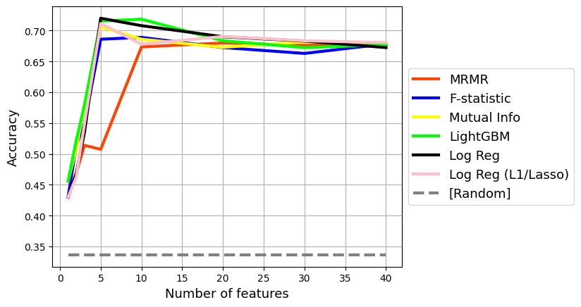

Rajiv Shah - rajistics blog
About Me
Categories
All
(24)
Adversarial
(1)
Agentic
(1)
AI
(1)
Annotated Talk
(2)
Anomaly
(1)
Basketball
(1)
Classification
(1)
Conformal
(1)
Data Preprocessing
(1)
Dataframes
(1)
Dataset
(2)
Earthquake
(2)
Evaluation
(1)
Explainability
(2)
featureselection
(1)
Finetuning
(1)
GenAI
(1)
H2O
(1)
Huggingface
(2)
Keras
(2)
Label
(1)
Leakage
(2)
LLM
(2)
Machine Learning
(1)
MAPIE
(1)
MLOps
(6)
MNIST
(2)
NLP
(4)
OpenAI
(1)
Optimization
(1)
Outlier
(1)
Quickdraw
(1)
R
(1)
RAG
(1)
Retrieval
(1)
RL
(1)
RNN
(2)
SARCOS
(1)
Semi-supervised
(1)
Setfit
(1)
Shiny
(1)
snowflake
(1)
Sparse
(1)
sport
(1)
Sport
(1)
SportVu
(1)
Tensorflow
(2)
Testing
(1)
Xgboost
(1)
Other Formats
Jupyter
Order By
Default
Created - Oldest
Created - Newest
Title
Running Code and Failing Models
Source: Yuriy Guts selection from Shutterstock
Dec 26, 2025
A Practical Guide to Evaluating Generative AI Applications
Watch the full video | Slides
Nov 1, 2025
From Vectors to Agents: Managing RAG in an Agentic World
Watch the full video | Slides
Oct 27, 2025
Understanding Sparse Matrices through Interactive Visualizations
When working with machine learning models, preparing data properly is essential. One common preprocessing technique is one-hot encoding, which transforms categorical data…
Mar 7, 2025

Feature Selection Methods and Feature Selection Curves
How to Select the Best Features for Machine Learning!
Oct 8, 2024
Snowflake ML Intro Notebook - ML Forecasting
This notebook introduces several key features of Snowflake ML in the process of training a machine learning model for forecasting Chicago bus ridership.
May 20, 2024
Reasoning in Large Language Models
I was wowed by ChatGPT. While I understood tasks like text generation and summarization, something was different with ChatGPT. When I looked at the literature, I saw this…
Feb 8, 2023
Text style transfer in a spreadsheet using Hugging Face Inference Endpoints
We change our conversational style from informal to formal speech. We often do this without thinking when talking to our friends compared to addressing a judge. Computers…
Nov 7, 2022
Few shot text classification with SetFit
Data scientists often do not have large amounts of labeled data. This issue is even graver when dealing with problems with tens or hundreds of classes. The reality is very…
Oct 27, 2022
Getting predictions intervals with conformal inference
Data scientists often overstate the certainty of their predictions. I have had engineers laugh at my point predictions and point out several types of errors in my model that…
Sep 24, 2022
Explaining predictions from 🤗 transformer models
This post covers 3 easy-to-use 📦 packages to get started. You can also check out the Colab 📓 companion notebook at https://bit.ly/raj_explain and the Youtube 🎥 video for…
Aug 14, 2022
Dynamic Adversarial Data Collection
Are you looking for better training data for your models? Let me tell you about dynamic adversarial data collection!
Aug 11, 2022
Stand Up for Best Practices
Source: Yuriy Guts selection from Shutterstock
Aug 15, 2019
Optimization Strategies
As a data scientist, you spend a lot of your time helping to make better decisions. You build predictive models to provide improved insights. You might be predicting whether…
Jul 30, 2018
Using Unlabeled Data to Label Data
Your boss hands you a pile of a 100,000 unlabeled images and asks you to categorize whether they are sandals, pants, boots, etc.
Jan 16, 2018
Using Google’s Quickdraw to create an MNIST style dataset!
For those running deep learning models, MNIST is ubiquotuous. This dataset of handwritten digits serves many purposes from benchmarking numerous algorithms (its referenced…
Jul 14, 2017
Deep Learning with R
For R users, there hasn’t been a production grade solution for deep learning (sorry MXNET). This post introduces the Keras interface for R and how it can be used to perform…
Jun 4, 2017
Building Worlds for Reinforcement Learning
OpenAI’s Gym places reinforcement learning into the masses. It comes with a wealth of environments from the classic cart pole, board games, Atari, and now the new Universe wh…
Jan 24, 2017
Taking an H2O Model to Production
One of the best feelings as a Data Scientist is when the model you have poured your heart and soul into, moves into production. Your model is now
grown-up
and you get to…
Aug 22, 2016
Using xgbfi for revealing feature interactions
Tree based methods excel in using feature or variable interactions. As a tree is built, it picks up on the interaction of features. For example, buying ice cream may not be…
Aug 1, 2016
Outlier App
I was recently trying various outlier detection algorithms. For me, the best way to understand an algorithm is to tinker with it. I wanted to share my recent work on a shiny…
Jun 27, 2016
RNN Addition (1st Grade)
Ever since I ran across RNNs, they have intrigued me with their ability to learn. The best background is Denny Britz’s tutorial, Karpathy’s totally accessible and fun post on …
Apr 5, 2016
SportVu Analysis
This post shares some of the code that I have created for analyzing NBA SportVu data.
Apr 2, 2016
Shiny front end for Tensorflow demo
I built a GUI front end for tensorflow from shiny, the code is available at Github. The shiny app allows trying different inputs, RNN cell types, and even optimizers. The…
Apr 1, 2016
No matching items